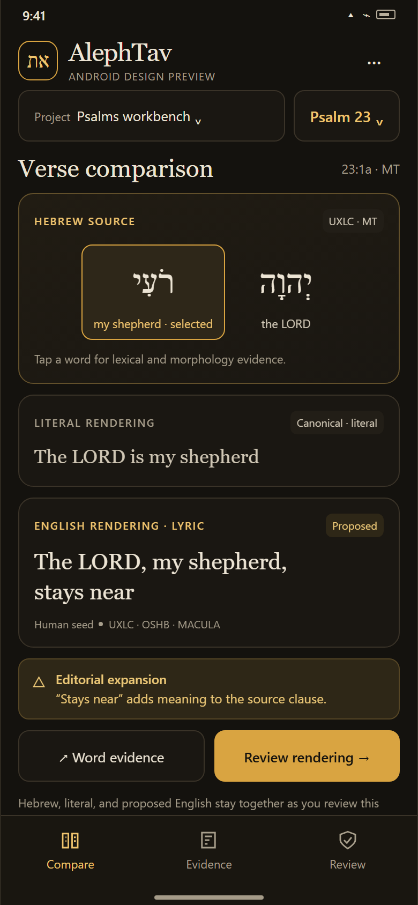
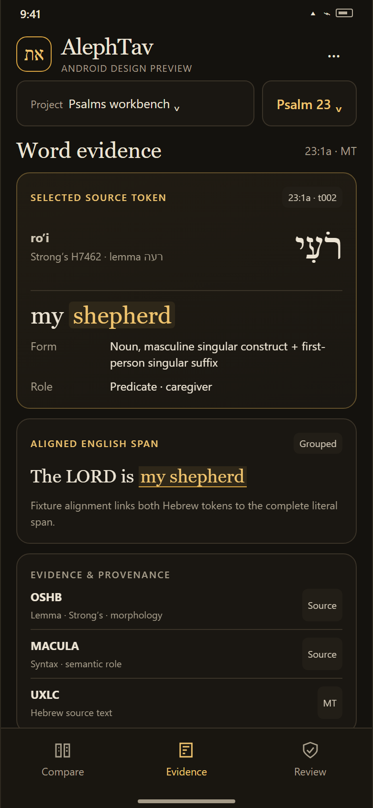
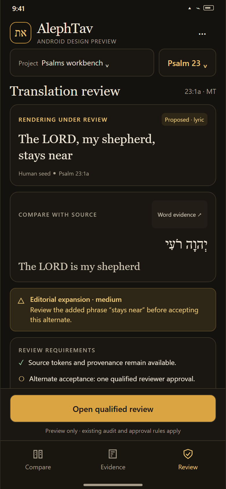

01Compare the verse

02Follow the evidence

03Review the rendering

AlephTav · Android
Existing ink-and-gold palette · Psalm 23:1a fixture
390 × 844 CSS px · interactive source preview available


